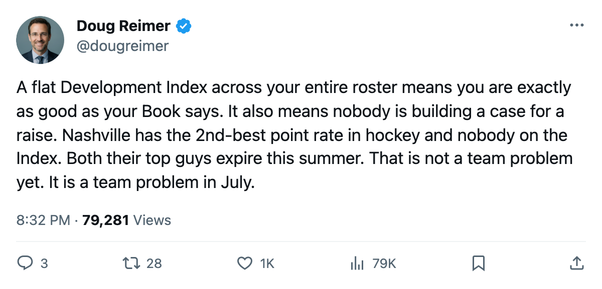
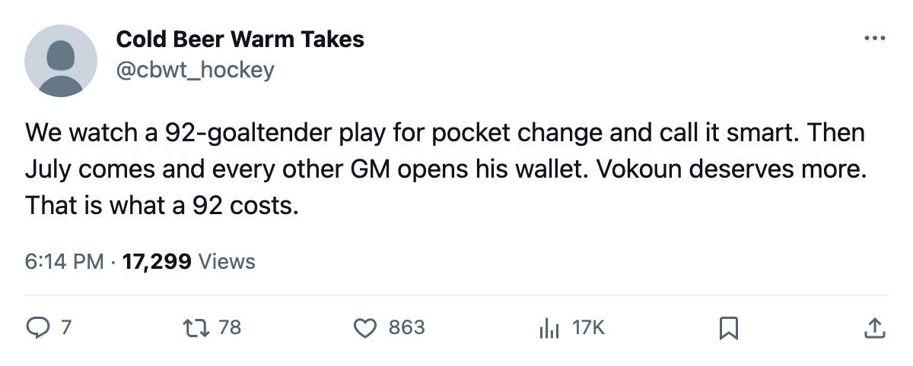

$2.14M a Point, Zero Players on the Index, and 2 Expiring Deals: The Nashville Sheet After 16 Games
The 2nd-cheapest team in hockey has the flattest form curve in the league and its two best contracts ending this summer
 Doug ReimerAnalytics editor, ex-video coach · The Slot Report
Doug ReimerAnalytics editor, ex-video coach · The Slot Report
 Nashville Predators pays $2.14M per point after 16 games, the 2nd-lowest rate in the league behind
Nashville Predators pays $2.14M per point after 16 games, the 2nd-lowest rate in the league behind  Pittsburgh Penguins at $2.04M. The team sits 2nd in the West. It also has 0 players on the Bureau's Development Index, on either side of the list, and the 2 highest-rated men on its roster are both in the final year of their contracts.
Pittsburgh Penguins at $2.04M. The team sits 2nd in the West. It also has 0 players on the Bureau's Development Index, on either side of the list, and the 2 highest-rated men on its roster are both in the final year of their contracts.
The flat Index is what makes the $2.14M worth watching.  Tomas Vokoun90 carries a 92 overall on a $0.90M salary.
Tomas Vokoun90 carries a 92 overall on a $0.90M salary.  David Legwand88 carries a 90 on $8.37M. Those two deals produce the two best ratings on the roster. Both expire after this season.
David Legwand88 carries a 90 on $8.37M. Those two deals produce the two best ratings on the roster. Both expire after this season.
Nobody on the Index
The Development Index tracks the gap between a player's base overall and his current form. The Bureau publishes 20 risers and 15 fallers. Nashville has no player on either list. No Blackhawk, no Sabre, no Ottawa man appears either, but those clubs carry 14 and 12 players in the Book's top 60 respectively. Nashville carries 9.
A flat Index across 9 top-60 players means the roster is performing exactly as the Book says it should, give or take rounding. Vokoun is a 92, and the team has 24 points in 16 games on his 10 starts. Legwand is a 90, and he has 23 points in 16 games at 21.4 minutes a night. Nobody is surging, nobody is collapsing; the team is producing at its rated numbers.
No player is building trade value, and nobody is approaching free agency on a hot streak. When Vokoun and Legwand hit the market, they arrive at their base numbers with no form premium to justify a raise.
The two deals that make the math work
| Player | Position | Overall | Salary | GP | Points | Morale | Contract Year |
|---|---|---|---|---|---|---|---|
| Tomas Vokoun | G | 92 | $0.90M | 10 | 97 | 1 | |
| David Legwand | C | 90 | $8.37M | 16 | 23 | 97 | 1 |
 Scott Walker83 Scott Walker83 | RW | 85 | $1.80M | 16 | 18 |
Vokoun at $0.90M is the cheapest top-95 player in the league. The only other player rated 92 or above on an expiring deal is  Curtis Joseph91 at $8.00M. Joseph is 38. Vokoun is 29. The Bureau's Book has both at 92. One costs $0.90M and the other costs $8.00M.
Curtis Joseph91 at $8.00M. Joseph is 38. Vokoun is 29. The Bureau's Book has both at 92. One costs $0.90M and the other costs $8.00M.
Scott Walker has 85 at $1.80M and 18 points in 16 games at 20.0 minutes a night. That would be a bargain on any team in the league. His deal has no years left, which makes him a useful trade piece if the front office decides the two above him are leaving.
What the league's cheap-point clubs have in common
The 5 lowest cost-per-point teams after 15-19 games:
| Club | Payroll | Points | $M/Point | GP | Conference Standing |
|---|---|---|---|---|---|
| Pittsburgh Penguins | $48.92M | 24 | $2.04M | 15 | 3rd, East |
| Nashville Predators | $51.38M | 24 | $2.14M | 16 | 2nd, West |
 Vancouver Canucks Vancouver Canucks | $46.36M | 21 | $2.21M | 17 | 5th, West |
 Dallas Stars Dallas Stars | $58.02M | 25 | $2.32M | 18 | 1st, West |
 Columbus Blue Jackets Columbus Blue Jackets | $62.03M | 23 | $2.70M | 16 | 3rd, West |
All 5 sit inside the top 5 in their conference. Cost-per-point tracks winning, but it also tracks contracts about to expire. Pittsburgh Penguins has  Martin Straka83 ($4.20M, 87 overall, 23 points) on an expiring deal. Vancouver Canucks has
Martin Straka83 ($4.20M, 87 overall, 23 points) on an expiring deal. Vancouver Canucks has  Markus Naslund89 ($4.40M, 91 overall, 31 points) and
Markus Naslund89 ($4.40M, 91 overall, 31 points) and  Ed Jovanovski86 ($2.30M, 88 overall) both at 100 morale and both expiring. Dallas Stars has Jason Bacashihua87 ($0.90M, 89 overall) with one year left.
Ed Jovanovski86 ($2.30M, 88 overall) both at 100 morale and both expiring. Dallas Stars has Jason Bacashihua87 ($0.90M, 89 overall) with one year left.
Every one of these players is the one who will ask for market money at the end of the year, or leave. The cheap-point ranking is a snapshot of a roster in the middle of that decision.
The morale number
Nashville averages 94.1 as a club, tied for 5th in the league. Vokoun and Legwand are both at 97. Neither is going to force a trade out of unhappiness. That means the front office cannot dangle unhappy stars to recoup something. If they decide to re-sign, they re-sign at whatever the market says a 92-goaltender and a 90-center command. If they do not, the team loses its top 2 rated players in the same summer.
The Predators pay $51.38M and turn a profit of $19.09M on $36.79M in revenue. That budget works because $0.90M of it goes to a 92-goaltender and $8.37M goes to a 90-center, and both deals expire in seven months. The math that produces $2.14M a point is the math of expiring contracts, not built to last.
The Index shows nobody moving in either direction. The standings put them 2nd in the West. Both numbers belong to the team that pays $0.90M for a 92 and $8.37M for a 90, and those two deals have until the end of this season to be extended. Nothing on the form measure points toward a collapse. The window closes when the calendar says so.

